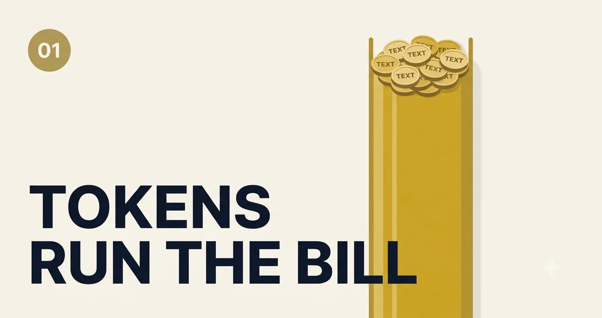

Tokens: The Smallest Unit That Controls Your Entire AI Architecture
A field guide from production trenches: what tokens really are, why they break systems at scale, and how to reason about context, cost, and quality before you ship.
What a token actually is (and what it is not)
A token is not a word. It is a chunk of text the model reads and writes through its tokenizer—often a subword piece.
hello might be one token; ChatGPT might split differently; code and JSON often consume more tokens than plain English for the same meaning.
Providers bill and cap usage in tokens. Your context window, latency, and monthly invoice all track this unit. Character count is a rough guess; token count is the contract.
Rule of thumb for English prose: about 4 characters per token on average—but averages lie. Legal text, URLs, emojis, and non-Latin scripts can push that ratio hard in either direction.
Try it: interactive token lab
Paste or type text below to see how it maps to tokens (using the cl100k_base encoding used by many OpenAI models).
Watch how length, structure, and repetition change the count—and how fast you would fill common context windows.
Token Lab
Live encoding for learning. Estimates cost using simple per-million rates you can adjust.
Share of common context windows (input only)
Token visualization (each color = one token)
Loading tokenizer…
💡 What to notice: Duplicate boilerplate, huge system prompts, and pasted stack traces dominate token spend long before the user’s actual question does.
Why tokens become your real architecture boundary
I once watched a customer support copilot degrade from "impressively sharp" to "randomly forgetful" within two weeks of launch. Nothing in the model changed. What changed was prompt length. New policy docs and chat history silently pushed requests past the practical context window, so crucial instructions were dropped and answers drifted.
That week taught my team a hard truth: tokens are not a billing detail, they are the architecture boundary. If you ignore token budgets, quality, latency, and reliability collapse together.
🧠 Pause & Think: If your prompt doubled overnight because of new business rules, would your current system still return stable, grounded answers?
Real-world problems teams hit with tokens
These show up repeatedly across enterprise deployments—not as model bugs, but as token economics and context design failures.
Problem 01 · Context creep
Chat history eats the window
Multi-turn apps append full history every call. After 15–20 turns, system instructions and fresh retrieval get truncated. Users report the bot "forgot" policies it followed on day one.
Fix direction: rolling summaries, sliding windows, or store state outside the prompt and inject only what matters.
Problem 02 · RAG stuffing
Retrieval dumps too many chunks
Teams increase top-K after a bad answer. Token count spikes; latency rises; the model still misses the right paragraph because signal is buried in noise.
Fix direction: rerank, compress, and pack by token budget—not by chunk count alone.
Problem 03 · Output blowups
Unbounded completion length
A user asks for a "full report" and the model returns 3,000+ output tokens. One request can cost more than thousands of short Q&A calls. p99 latency ruins SLOs.
Fix direction: reserve output budget up front; use structured sections with max lengths.
Problem 04 · Hidden prompt tax
Tool schemas and JSON in every request
Function definitions and verbose JSON examples sit in the system prompt on every call. You pay for them even when the user only says hello.
Fix direction: route to minimal tool sets per intent; lazy-load heavy schemas.
Problem 05 · Multilingual inflation
Same message, very different token counts
Hindi, Japanese, or mixed-language tickets often tokenize less efficiently than English. Capacity planning based on English-only tests under-provisions non-English traffic.
Fix direction: benchmark per locale; adjust budgets and pricing models by language segment.
Problem 06 · Summarization chains
Map-reduce that doubles spend
Long documents get chunked, summarized per chunk, then summarized again. Each stage re-reads tokens. Bills jump 3–5× versus a single well-packed pass with the right window.
Fix direction: measure end-to-end tokens per document, not per step.
A mental model that actually helps
Picture an AI model as an airline with strict baggage limits. Every word in your system prompt, user query, retrieved chunk, and output is luggage. Go over weight and the airline does not negotiate; something gets removed, delayed, or charged extra.
Visualize three belts: Instruction Belt (system + policy), Context Belt (history + RAG), and Answer Belt (reserved output). Your job as architect is to allocate weight across these belts before every call—and log which belt failed when quality drops.
flowchart TB
subgraph belts [Token belts per request]
I[Instruction: system + policy]
C[Context: history + RAG + tools]
O[Answer: reserved completion]
end
I --> API[Model API call]
C --> API
O --> API
API --> M[Observability: in / out / dropped chunks]
Token budgeting in production code
Before calling the model, decide how many tokens belong to instructions, retrieved context, and completion. Pack context to fit; never assume the API will "figure it out."
const MAX_INPUT_TOKENS = 8000;
const RESERVED_OUTPUT_TOKENS = 900; // Headroom prevents truncation mid-answer.
const MAX_CONTEXT_TOKENS = MAX_INPUT_TOKENS - RESERVED_OUTPUT_TOKENS;
const systemTokens = countTokens(systemRules);
const userTokens = countTokens(userQuery);
const budgetForRag = MAX_CONTEXT_TOKENS - systemTokens - userTokens;
const chunks = rerank(retrievedDocs);
const packedContext = packWithinTokenBudget(chunks, budgetForRag);
if (packedContext.dropped.length > 0) {
metrics.increment("rag_chunks_dropped", packedContext.dropped.length);
}
const response = await llm.responses.create({
model: "gpt-4.1-mini",
input: buildPrompt({ systemRules, userQuery, packedContext }),
max_output_tokens: RESERVED_OUTPUT_TOKENS,
});🛠️ Try This: Log input tokens, output tokens, and latency per endpoint. In two days, patterns will tell you exactly where to optimize.
Choosing the right token strategy
Different token strategies win under different constraints. Here is the matrix I use during design reviews:
| Strategy | Performance Overhead | Production Cost | When to Use |
|---|---|---|---|
| Large static prompts | Low engineering effort, high runtime load | High | Fast prototypes only |
| RAG with fixed top-K | Moderate | Medium | Stable domains with predictable queries |
| Adaptive token budgeter | Higher upfront design, lower runtime waste | Low to Medium | Production systems at scale |
| External memory (DB / cache) | Higher infra complexity | Medium | Long-running agents and copilots |
⚡ Pop Quiz: If your hardest constraint is unpredictable monthly spend, which strategy from the matrix should you deploy first?
What to measure in observability
- Input tokens by layer: system, tools, RAG, user message.
- Output tokens p50 / p95 / p99 per endpoint.
- Truncation events when context exceeds budget.
- Cost per successful task, not cost per API call alone.
- Token ratio by locale for global products.
Mistakes that break reliability and spend
⚠️ Danger Zone: "Bigger context window means we can skip prompt design." This usually creates expensive, noisy prompts and weaker answers.
⚠️ Danger Zone: "We only need average token metrics." Outliers are where incidents live. Always monitor p95 and p99 token usage.
⚠️ Danger Zone: "Let users ask anything with no output cap." One long output burst can wreck both latency and budget.
🚫 CRITICAL MISTAKE I HAVE SEEN: letting retrieval dump full documents into the prompt without token packing. This pushes essential instructions out of scope and causes groundedness failures that look like hallucinations.
- Set per-endpoint input and output token ceilings.
- Reserve output tokens before packing context.
- Track token usage with request IDs for incident replay.
- Fail gracefully when token budget is exceeded (summarize, do not crash).
A practical challenge before you ship
Build a mini "token governor" middleware for one endpoint. It should estimate tokens before calling the model, trim or summarize context when needed, and emit a structured metrics event. Use the Token Lab above to calibrate what "too big" feels like for your real prompts.
If you can complete that in your own stack, you are no longer "using an LLM API"; you are engineering an AI system.
Reveal the Pop Quiz veteran answer
Start with the adaptive token budgeter. It gives you active control over per-request spend while preserving response quality through smarter context packing.